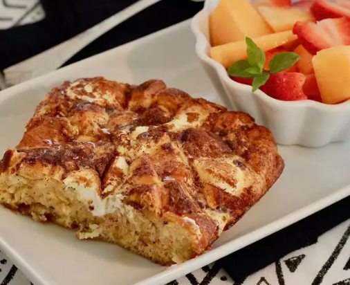

Sunday Morning Surprise Recipe

I created this recipe one morning for something unique and different for my family. Since we love the taste of brown sugar and cinnamon, this recipe combines the flavors of cinnamon rolls, egg casseroles, and French toast.
Ingredients:
- cooking spray
- 1 can (10 oz) reduced fat crescent rolls
- 1/3 cup brown sugar
- 1 tsp ground cinnamon
- 1 (3 oz) package Neufchatal cheese
- 3 eggs
- 1/4 cup milk
Cooking Directions:
-
Preheat oven to 350 degrees F (175 degrees C). Grease the bottom and sides of a 2-quart baking dish with cooking spray.
-
Pull crescent roll dough out of the can; slice dough into 1/2-inch pieces. Arrange over the bottom of the baking dish. Sprinkle brown sugar and cinnamon on top. Drop teaspoonfuls of the Neufchatel cheese on top.
-
Whisk eggs and milk together in a small bowl. Pour into the baking dish.
-
Bake in the preheated oven until the center is set, 40 to 50 minutes.